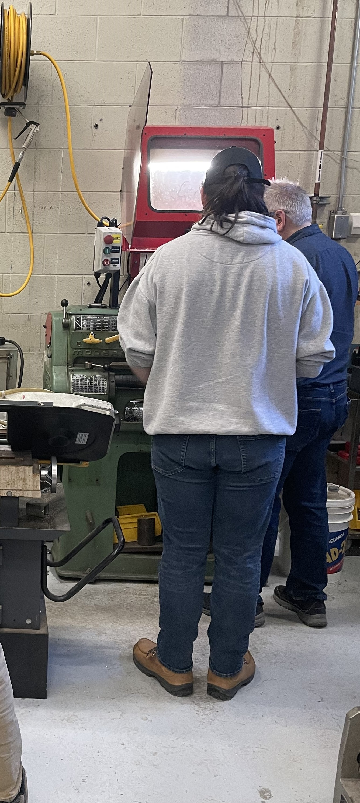
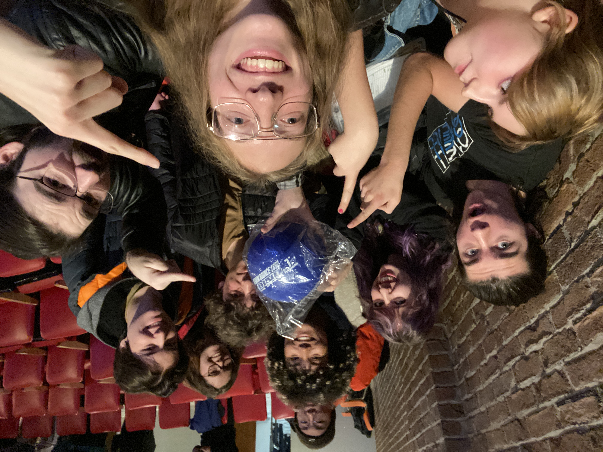
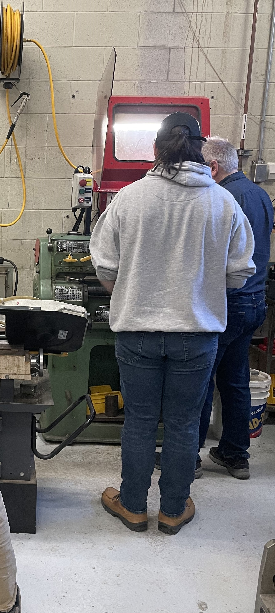
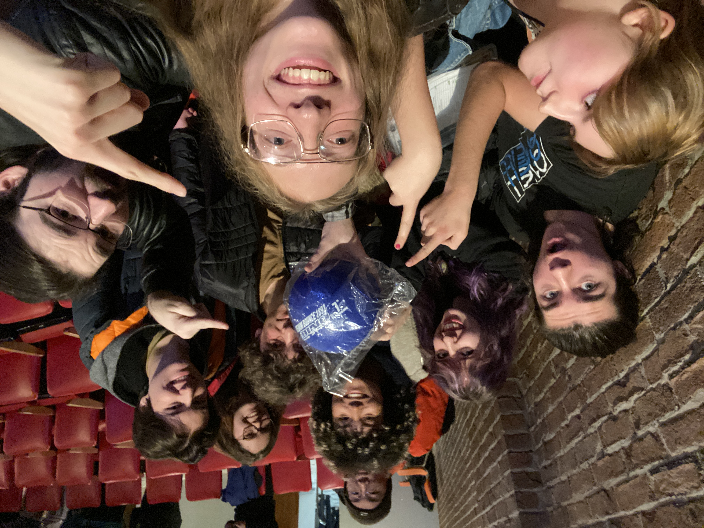

Cette année cii, le jeu est basé sur la pièce de jeu choisie: un ballon de jeu. Deux robots de deux équipes vont se combattre pour gagner le plus de points possibles. Ces robots sont placés sur un terrain de jeu avec une colline séparant les deux concurrents. La majorité des jeux commence au centre de la colline, accessible par les deux équipes. Chaque équipe gagne des points en plaçant le ballon aux endroits désignés, par tout moyen nécessaire.
Chaque équipe a trois structures centrales sur leur côté: une petite cible, une grande cible et quelques piliers. Les équipes reçoivent des points grâce aux cibles de l’équipe opposée, avec les petites cibles plus rapprochées que les grosses. 30 points sont amassés par balle sortant de la couche supérieure de la petite cible, 60 points pour la couche inférieure de la petite cible, tandis que 120 points sont amassés si la balle rentre dans la grosse cible. En plus de ça, chaque équipe a, sur leur côté, deux petits piliers en addition d’un grand qui calcule leur points finales. Par pilier atteint, l’équipe auront leur points multiplier par +0.5x. Lorsque les 5 minutes du jeu s’écroulent, des points seront aussi distribués selon l’emplacement du ballon.

Pour le lanceur, plusieurs idées ont été trouvées avant d’être abandonnées. Un système de catapult a été exclu rapidement en raison du temps requis pour l'initialiser. Un système de force brute a aussi été exclu puisqu’il serait trop imprécis. Malgré toutes les autres idées, l'idée choisie fut d’avoir deux volant sur des côtés opposés qui tournera la balle vers l'avant a un angle. Un prototype fonctionnel a même été créé avant les vacances d’hiver, démontrant la faisabilité. De ce concept. Durant la semaine de relâche, il a été décidé que le système aurait trois roues au lieu de deux, chacun avec 120 degrés de distance. Cela permettra au volant du haut de s’attacher a la bande pour ramasser les balles, tout en augmentant sa précision et sa force.

Pour le lanceur, plusieurs idées ont été trouvées avant d’être abandonnées. Un système de catapult a été exclu rapidement en raison du temps requis pour l'initialiser. Un système de force brute a aussi été exclu puisqu’il serait trop imprécis. Malgré toutes les autres idées, l'idée choisie fut d’avoir deux volant sur des côtés opposés qui tournera la balle vers l'avant a un angle. Un prototype fonctionnel a même été créé avant les vacances d’hiver, démontrant la faisabilité. De ce concept. Durant la semaine de relâche, il a été décidé que le système aurait trois roues au lieu de deux, chacun avec 120 degrés de distance. Cela permettra au volant du haut de s’attacher a la bande pour ramasser les balles, tout en augmentant sa précision et sa force.


 


